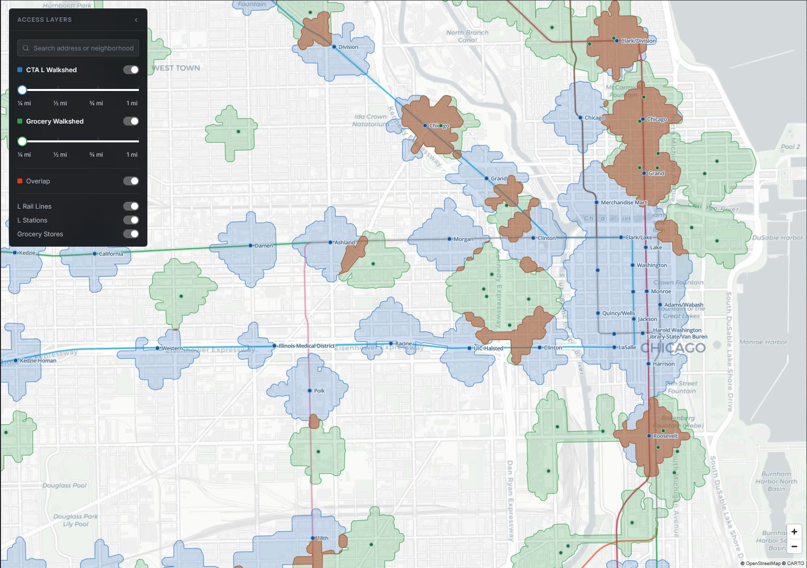

Projects
Live analysis, one stop at a time
Line 01 — Active
Chicago Transit & Grocery Access
Quarter-mile network walksheds around every CTA L station, intersected live against walkable grocery access — revealing exactly where transit and food access overlap, and where they don't.

Line 02 — Active

Train Spotter
A physical e-ink departure board displaying live public transit arrivals — built to sit on a shelf and just work.